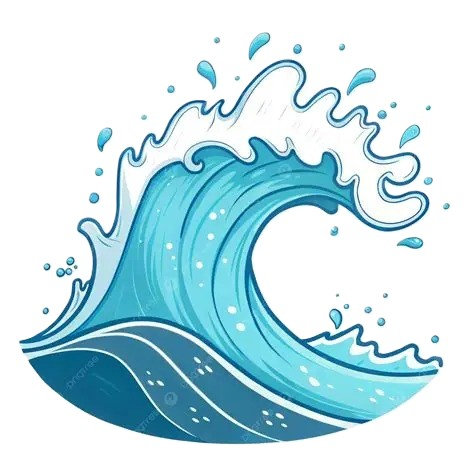
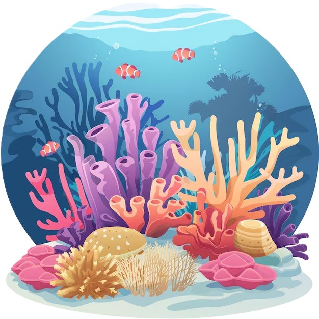
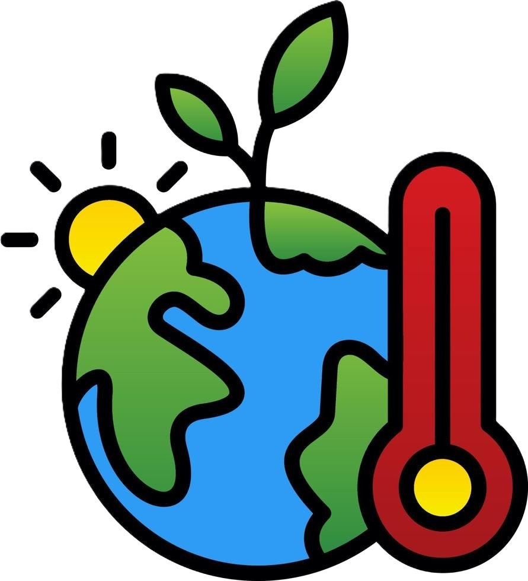
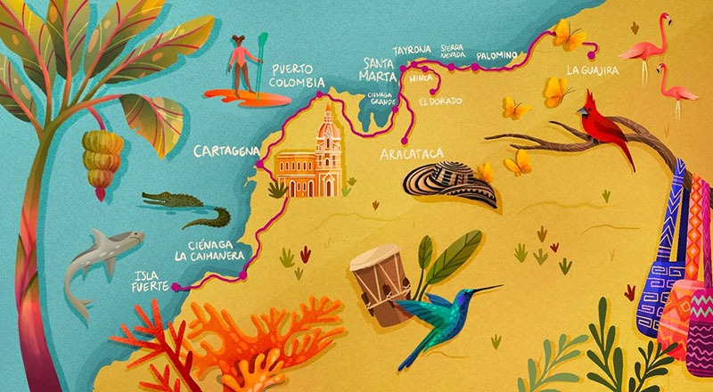

Manglares, pastos marinos y otros ecosistemas que sostienen la vida marina.
El Caribe colombiano alberga ecosistemas marinos esenciales para la biodiversidad y para las comunidades que dependen de ellos.

Manglares, pastos marinos y otros ecosistemas que sostienen la vida marina.

Ecosistemas fundamentales para la biodiversidad y el equilibrio marino.

Sus efectos pueden alterar los ecosistemas y afectar la vida marina.
Más de 1.600 km de costa continental e insular, y un territorio marino-costero que sostiene la vida, la economía y la cultura de millones de personas.

El litoral Caribe colombiano abarca departamentos como La Guajira, Magdalena, Atlántico, Bolívar, Sucre, Córdoba y el archipiélago de San Andrés, Providencia y Santa Catalina. Allí conviven playas turísticas, arrecifes coralinos, praderas de pastos marinos, manglares y desembocaduras de grandes ríos como el Magdalena y el Sinú, que conectan la vida en tierra firme con la salud del océano.
Estos ecosistemas no son solo un atractivo paisajístico; sostienen la pesca artesanal, protegen la costa frente a huracanes y oleajes extremos, capturan carbono y son la base de una parte importante del turismo nacional.
Los ecosistemas marinos representan cerca del 70 % de la superficie del planeta y son fuente de alimento y sustento para millones de personas que dependen de la pesca.
Como resultado del proceso de formalización de pescadores artesanales liderado por el Gobierno con apoyo del PNUD y la AUNAP, se ha llegado a 16.400 pescadores en las regiones Caribe e Insular y Pacífico, en 12 departamentos y 57 municipios (una muestra de que el mar también es empleo y tejido social.)
El país reporta avances formales en la meta del ODS 14, pero la salud real de los ecosistemas cuenta otra historia.
El informe anual de avance de los ODS en Colombia ubica a "Vida Submarina" entre los objetivos con resultados sobresalientes en el reporte institucional, junto con "Producción y Consumo Responsable" y "Alianzas para lograr los objetivos".
El Ministerio de Ambiente reportó que entre el 70 % y el 80 % de los arrecifes coralinos del país presentaron blanqueamiento por la ola de calor marina, con reportes en San Andrés y Providencia, Islas del Rosario y San Bernardo, Varadero (Cartagena), el Golfo de Morrosquillo y el Tayrona.
Según el panorama regional presentado ante la CEPAL, América Latina y el Caribe se sitúan por debajo del promedio mundial en protección costera, aguas limpias y biodiversidad, con estancamientos en las metas de contaminación marina y sobrepesca.
Colombia cuenta con una institucionalidad marítima activa desde hace casi dos décadas, aunque su implementación en el territorio sigue siendo un reto.
Liderada por la Comisión Colombiana del Océano (CCO), busca administrar, aprovechar económicamente, conservar y vigilar los espacios oceánicos y costeros, proyectando a Colombia como "Potencia Media Oceánica" en su versión vigente para el periodo 2016-2030.
Dependencia del Ministerio de Ambiente creada mediante el Decreto-Ley 3570 de 2011, encargada de temas como especies marinas amenazadas, basura marina y actualización del conocimiento marino-costero.
Adoptado para proteger las costas del Caribe y el Pacífico y fortalecer la adaptación al cambio climático, articulando a entidades nacionales y territoriales, academia, sector productivo y comunidades para reducir la vulnerabilidad frente a la erosión costera.
Estrategia de financiamiento e institucionalización dirigida a pescadores artesanales del Caribe, el Insular y el Pacífico.